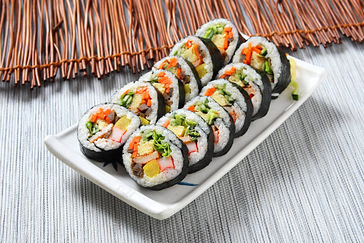

Kimbap

Note: Image is for food identification, will not be final product
Description
A sushi roll without sushi rice and a different filling
Ingredients
- seaweed sheet
- rice
- sesame oil
- carrot
- pickled radish
- 2 eggs
- salt to taste
- sugar to taste
- spinach
- bulgogi
Steps
- Cook the rice in a rice cooker.
- While that cooks, julienne the carrots and pickled radish, and slice up the spinach.
- Beat 2 eggs, season with sugar and salt to taste.
- Make the bulgogi.
- Quickly stir-fry the carrot and spinach separately
- Make a omelette with the egg and slice it into strips when done
- When rice is ready, get a square of seaweed and flatten a thin layer of rice on top
- Lay down the filling ingredients onto the rice.
- Roll it up like a sushi roll and brush some sesame oil on the outside.
- Slice into rolls and serve.
Back to Homepage